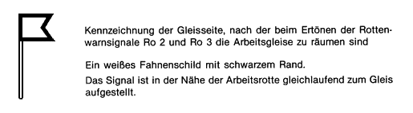

§ 8
Verhalten im Gleisbereich
(1) Versicherte dürfen
- den Gleisbereich nur nach Durchführung der
Sicherungsmaßnahmen nach § 5 Abs.
1 betreten,
- Gleise nicht kurz vor oder dicht hinter Schienenfahrzeugen
betreten,
- den Gleisbereich nach einer Räumung erst wieder
betreten, wenn der Aufsichtführende dies erlaubt hat,
- sich aus dem gesicherten Gleisbereich nur nach vorheriger
Zustimmung des Aufsichtführenden entfernen.
DA
(2) Versicherte müssen
- Warnsignale sofort befolgen,
- den Gleisbereich nach Wahrnehmung von Warnsignalen
unverzüglich nach der Seite verlassen, die vor Beginn der
Arbeiten festgelegt wurde,
- festgelegte Ausweichmöglichkeiten aufsuchen und die
Fahrt beobachten, wenn ein Verlassen des Gleisbereichs nicht
möglich ist,
- vor dem Wiederbetreten des Gleisbereichs sich
überzeugen, dass keine Warnung vor einer Fahrt besteht,
- Fahrzeugführer durch Nothaltsignal zum Halten
auffordern, wenn ein Gleis nicht befahrbar ist oder nicht
rechtzeitig geräumt werden kann
und
- im Gleis entgegen der üblichen Fahrtrichtung
gehen.
DA
Aufsichtführender ist, wer die Durchführung von
Arbeiten zu beaufsichtigen und für deren arbeitssichere
Ausführung zu sorgen hat. Er muß hierfür
ausreichende Kenntnisse und Erfahrungen besitzen sowie
weisungsbefugt sein.
Die Erlaubnis zum Wiederbetreten des geräumten Gleises
setzt voraus, dass der Aufsichtführende bei unklaren
Betriebsverhältnissen sich vorher beim Sicherungsposten
vergewissert hat, dass der Gleisbereich wieder betreten werden
darf.
Ist die Austrittseite, nach der der Gleisbereich verlassen
werden muß, nicht zweifelsfrei zu erkennen, kennzeichnet die
Sicherungsaufsicht diese Seite durch Fahnenschilder (Signal Ro
4).
Signal Ro 4 – Fahnenschild –
